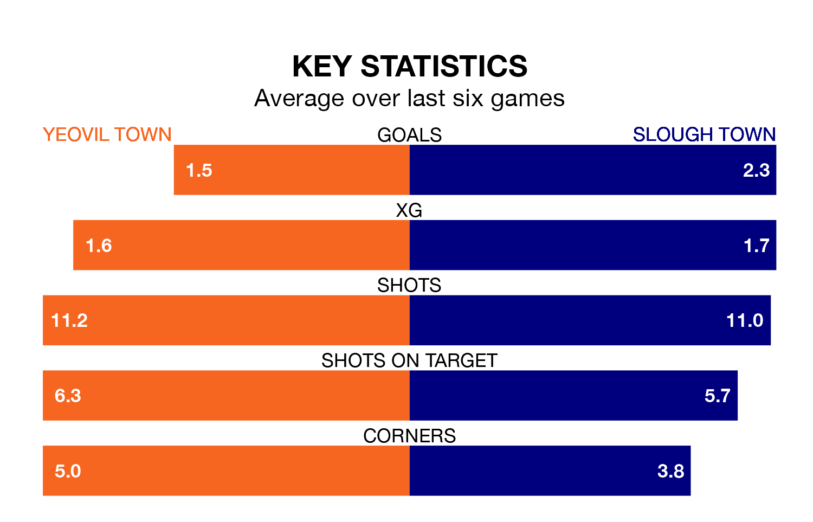

Tuesday's late match between Yeovil Town and Slough Town promises to be one for the neutrals, as two of National League South's most free-scoring sides go head-to-head.
Ahead of the game at the Huish Park Stadium, Yeovil and Slough sit second and third in the goal-scoring charts, with 53 and 51 goals respectively.
another and another lead the way for the home side, having bagged eight goals each in their 28 games to date.
And another has been the main man in the opponents' penalty box for Slough, with seven goals.
Yeovil are top of the table after 28 games, of which they have won 19 and drawn six, earning 63 points.
Slough are 12 places behind Yeovil Town in 13th, with 11 wins and seven draws putting them on 40 points.
The hosts are in reasonable form in National League South, with three wins and two draws from their last six games.
With four wins and two draws over that period, Slough Town's form is better – they have taken 14 points from 18, compared to Yeovil's 11.
Yeovil's last match was on December 26, a 4-1 win against Taunton Town.
Slough beat Bath City 2-1 last time out, on January 9.
Updated: 10:03 (UTC), 30/01/24